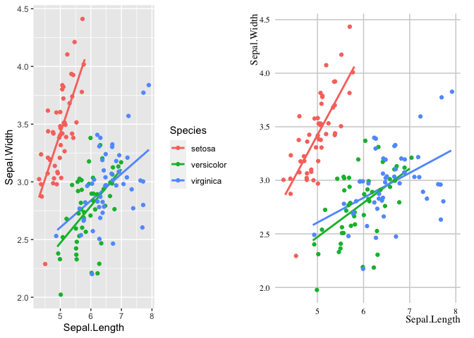

The goal of tidyMB is to provide opinionated table, figure, and .Rmd templates and styles used in the Motivation and Behaviour program at Institute for Positive Psychology and Education, Australian Catholic University.
Installation
The development version from GitHub with:
# install.packages("devtools")
devtools::install_github("Motivation-and-Behaviour/tidyMB")Example plot comparing default with theme_mnb
library(tidyMB)
suppressPackageStartupMessages(library(tidyverse))
## Then use the + mnb on your plots ##
original <- iris %>%
ggplot(aes(x = Sepal.Length, y = Sepal.Width, col = Species)) +
geom_smooth(method = "lm", se = F) +
geom_jitter()
mnb_version <- original + theme_mb()
require(gridExtra)
#> Loading required package: gridExtra
#>
#> Attaching package: 'gridExtra'
#> The following object is masked from 'package:dplyr':
#>
#> combine
grid.arrange(original, mnb_version, ncol = 2)
#> `geom_smooth()` using formula 'y ~ x'
#> `geom_smooth()` using formula 'y ~ x'